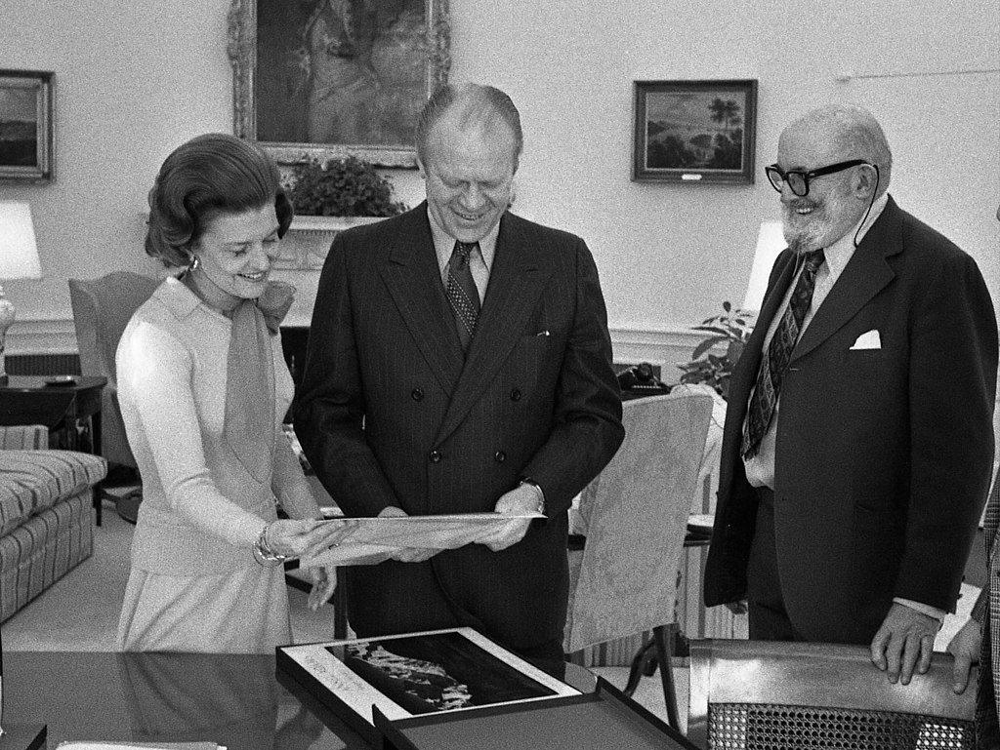

Adams, Ansel (Feb. 20 1902 — Apr. 22, 1984), photographer and environmentalist, was born in San Francisco, California, the son of Charles Hitchcock Adams, a businessman, and Olive Bray. The grandson of a wealthy timber baron, Adams grew up in a house set amid the sand dunes of the Golden Gate. When Adams was only four, an aftershock of the great earthquake and fire of 1906 threw him to the ground and badly broke his nose, distinctly marking him for life. A year later the family fortune collapsed in the financial panic of 1907, and Adams’s father spent the rest of his life doggedly but fruitlessly attempting to recoup. An only child, Adams was born when his mother was nearly forty. His relatively elderly parents, affluent family history, and the live-in presence of his mother’s maiden sister and aged father all combined to create an environment that was decidedly Victorian and both socially and emotionally conservative. Adams’s mother spent much of her time brooding and fretting over her husband’s inability to restore the Adams fortune, leaving an ambivalent imprint on her son. Charles Adams, on the other hand, deeply and patiently influenced, encouraged, and supported his son.
When Edward Steichen formed his Naval Aviation Photographic Unit in early 1942, he wanted Adams to be a member, to build and direct a state-of-the-art darkroom and laboratory in Washington, D.C. Around February 1942, Steichen asked Adams to join him in the navy. Adams agreed, but with two conditions: He wanted to be commissioned as an officer, and he would not be available until July 1. Steichen, who wanted the team assembled as quickly as possible, passed on Adams and had his other photographers ready by early April. Adams was distressed by the Japanese American internment that occurred after the Pearl Harbor attack. He requested permission to visit the Manzanar War Relocation Center in the Owens Valley, at the base of Mount Williamson. The resulting photo-essay first appeared in a Museum of Modern Art exhibit, and later was published as Born Free and Equal: The Story of Loyal Japanese-Americans. Upon its release, "[the book] was met with some distressing resistance and was rejected by many as disloyal." This work was a significant departure, stylistically and philosophically, from the work for which Adams is generally known. He also contributed to the war effort by doing many photographic assignments for the military, including making prints of secret Japanese installations in the Aleutians.
Adams received a number of awards during his lifetime and posthumously, and several awards and places have been named in his honor. For his photography, Adams received the Hasselblad Award in 1981. Two of his photographs, The Tetons and the Snake River and a view of the Golden Gate Bridge from Baker Beach, were among the 115 images recorded on the Voyager Golden Record aboard the Voyager spacecraft. These images were selected to convey information about humans, plants and animals, and geological features of the Earth to a possibly alien civilization. For his conservation efforts, Adams received the Sierra Club John Muir Award in 1963. In 1968, he was awarded the Conservation Service Award, the highest award of the Department of the Interior. In 1980, President Jimmy Carter awarded him the Presidential Medal of Freedom, the nation's highest civilian honor, for "his efforts to preserve this country's wild and scenic areas, both on film and on earth. Drawn to the beauty of nature's monuments, he is regarded by environmentalists as a national institution." Adams received an honorary artium doctor degree from Harvard University and an honorary Doctor of Fine Arts degree from Yale University. He was elected a Fellow of the American Academy of Arts and Sciences in 1966. In 2007, he was inducted into the California Hall of Fame by California Governor Arnold Schwarzenegger and First Lady Maria Shriver. The Sierra Club's Ansel Adams Award for Conservation Photography was established in 1971, and the Ansel Adams Award for Conservation was established in 1980 by The Wilderness Society, which also has a large permanent gallery of his work on display at its Washington, D.C. headquarters. The Minarets Wilderness in the Inyo National Forest and a 11,760-foot (3,580 m) peak therein were renamed the Ansel Adams Wilderness and Mount Ansel Adams, respectively, in 1985.
Adams died from cardiovascular disease on April 22, 1984, in the Intensive-care unit at the Community Hospital of the Monterey Peninsula in Monterey, California, at age 82. He was surrounded by his wife, children Michael and Anne, and five grandchildren. Publishing rights for most of Adams's photographs are handled by the trustees of The Ansel Adams Publishing Rights Trust. An archive of Adams's work is located at the Center for Creative Photography at the University of Arizona in Tucson. Numerous works by the artist have been sold at auction, including a mural-sized print of Clearing Winter Storm, Yosemite National Park, which sold at Sotheby's New York in 2010 for $722,500, the highest price ever paid for an original Ansel Adams photograph. John Szarkowski states in the introduction to Ansel Adams: Classic Images, "The love that Americans poured out for the work and person of Ansel Adams during his old age, and that they have continued to express with undiminished enthusiasm since his death, is an extraordinary phenomenon, perhaps even unparalleled in our country's response to a visual artist."
